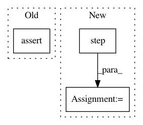

ee950b503eeed5aca3747a4bcf2a40f624b743a0,tensorforce/core/optimizers/synchronization.py,Synchronization,tf_step,#Synchronization#Any#Any#Any#,58
Before Change
Returns:
List of delta tensors corresponding to the updates for each optimized variable.
assert all(
util.shape(source) == util.shape(target)
for source, target in zip(source_variables, variables)
)
def apply_sync():
update_weight = self.update_weight.value()
deltas = list()
After Change
**kwargs: Additional arguments, not used.
Returns:
List of delta tensors corresponding to the updates for each optimized variable.
assert all(
util.shape(source) == util.shape(target)
for source, target in zip(source_variables, variables)
)
timestep = Module.retrieve_tensor(name="timestep")
def apply_sync():
update_weight = self.update_weight.value()
deltas = list()
for source_variable, target_variable in zip(source_variables, variables):
delta = update_weight * (source_variable - target_variable)
deltas.append(delta)
applied = self.apply_step(variables=variables, deltas=deltas)
last_sync_updated = self.last_sync.assign(value=timestep)
with tf.control_dependencies(control_inputs=(applied, last_sync_updated)):
// Trivial operation to enforce control dependency
return [util.identity_operation(x=delta) for delta in deltas]
def no_sync():
deltas = list()
for variable in variables:
delta = tf.zeros(shape=util.shape(variable))
deltas.append(delta)
return deltas
sync_frequency = self.sync_frequency.value()
skip_sync = (timestep - self.last_sync < sync_frequency)
return self.cond(pred=skip_sync, true_fn=no_sync, false_fn=apply_sync)
In pattern: SUPERPATTERN
Frequency: 3
Non-data size: 3
Instances
Project Name: reinforceio/tensorforce
Commit Name: ee950b503eeed5aca3747a4bcf2a40f624b743a0
Time: 2019-01-21
Author: alexkuhnle@t-online.de
File Name: tensorforce/core/optimizers/synchronization.py
Class Name: Synchronization
Method Name: tf_step
Project Name: tensorflow/agents
Commit Name: 230503ac56636d91d53d728c247c6ea3d096eeb9
Time: 2018-11-30
Author: sguada@google.com
File Name: tf_agents/environments/tf_py_environment_test.py
Class Name: TFPYEnvironmentTest
Method Name: testTwoStepsDependenceOnTheFirst
Project Name: tensorflow/agents
Commit Name: 230503ac56636d91d53d728c247c6ea3d096eeb9
Time: 2018-11-30
Author: sguada@google.com
File Name: tf_agents/environments/tf_py_environment_test.py
Class Name: TFPYEnvironmentTest
Method Name: testOneStep